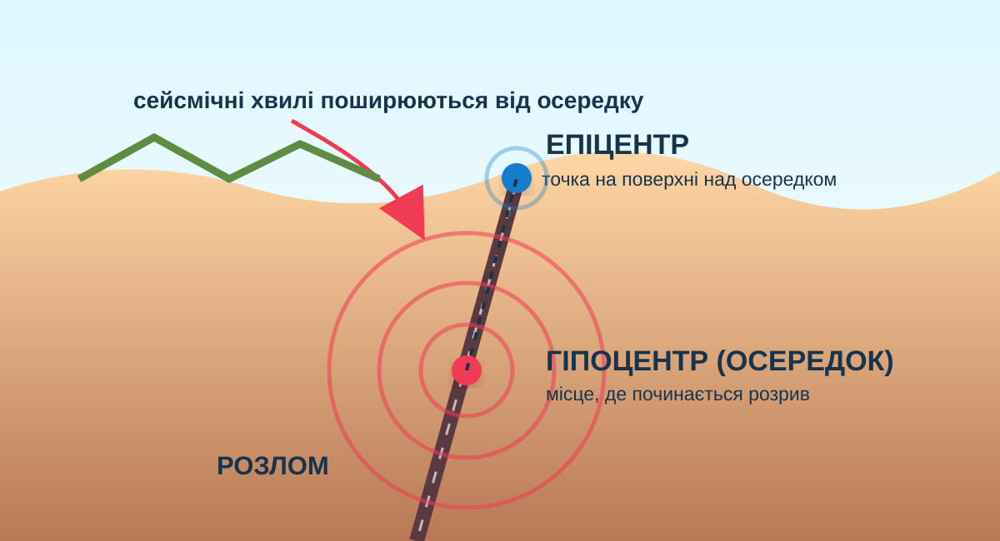

Школа А
18 км від епіцентру; будівля на щільних породах; сучасні сейсмостійкі норми.
Чому одна точка на карті може означати подію, що почалася на глибині? Спершу прочитаємо реальні сейсмічні дані, побудуємо модель і перевіримо правила безпеки — теорія буде після доказів.
Ви працюєте як сейсмологічна група: відокремлюєте дані від припущень, пояснюєте поняття осередок/гіпоцентр та епіцентр, розрізняєте магнітуду й інтенсивність і створюєте пам’ятку безпечної поведінки.
Завантажте стрічку USGS M4.5+ за останню добу. Дані приходять напряму з офіційного GeoJSON feed.
Спочатку дослідіть схему. Натискайте терміни — вони підсвітять потрібний елемент.

Один землетрус має одну магнітуду, але наслідки в різних місцях можуть відрізнятися.
18 км від епіцентру; будівля на щільних породах; сучасні сейсмостійкі норми.
18 км від епіцентру; товстий шар пухких водонасичених відкладів; стара неукріплена кладка.
Пересувайте повзунок: умовна модель показує, як із віддаленням у часі приходять P- і S-хвилі.
Чим більша різниця часу приходу P- і S-хвиль, тим далі станція від осередку. Для точного визначення епіцентру потрібні дані кількох станцій.
КТП просить створити пам’ятку про «ознаки наближення землетрусу». Тут важлива наукова чесність: точну дату, час і місце майбутнього землетрусу сучасна наука не вміє передбачити.
Оберіть ситуацію й правильну дію. Орієнтир USGS: Drop — Cover — Hold On.

Замість «прикмет, що точно передбачають землетрус» зробіть науково коректну пам’ятку: ризик, раннє попередження, дії під час і після поштовхів.
Заповніть поля та натисніть кнопку.
Узагальнюємо закономірності, які вже побачили.
Коливання земної поверхні, що виникають унаслідок раптового вивільнення енергії, найчастіше під час зміщення порід уздовж розлому.
Точка або зона в надрах, де починається розрив і звідки поширюються сейсмічні хвилі.
Точка на земній поверхні безпосередньо над гіпоцентром.
Кількісна характеристика розміру землетрусу. Збільшення магнітуди на 1 означає значно більшу амплітуду хвиль та енерговиділення.
Наскільки сильно хитало й які були наслідки у конкретному місці; залежить від відстані, ґрунтів, будівель та інших умов.
Система раннього попередження виявляє вже розпочатий землетрус і може випередити сильні хвилі на секунди; це не передбачення дати події заздалегідь.
USGS показує правильну дію під час сильного хитання. Після перегляду поясніть, чому «вибігти з будівлі негайно» може бути небезпечніше.
Твердження → доказ → міркування.
§16. Завершіть пам’ятку «Землетрус: як діяти безпечно». Додайте 3 правила, які можна перевірити за надійним джерелом, і 1 поширений міф із спростуванням.
Відкриється тільки після введення імені, прізвища та класу.